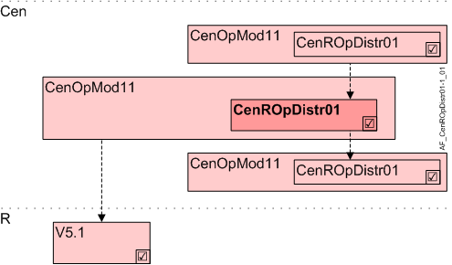

中央机房操作分布（CenROpDstr01）
Overview
应用功能》Central room operation distribution 01, Desigo TRA V5.1" (CenROpDstr01）处理房间内手动操作员干预的重置功能的分配rooms with Desigo V5.1 / V5.1SP functionality.
命令被分发到下级 AFsCenROpDstr01或直接前往相连的房间。

岑 | 中央职能 |
CenOpMod11 | Central operating mode determination 11 |
CenROpDistr01 | Central room operation distribution 01, Desigo TRA V5.1 |
R | 房间 |
V5.1 | 函数 V5.1 / V5.1SP |
Function
在 Desigo V6 及更高版本中，操作员手动干预的重置在房间内进行。在 Desigo V5.1 / V5.1SP 中，它在 CenOpMod01 中作为中央复位实现。
CenROpDstr01 is used in cases where CenOpMod11 works with V5.1 rooms as a supplement to the reset function in CenOpMod11.
可以集中重置以下操作员干预：
- Presence button
- Setpoint shift
- Room climate operating mode
- Fan speed
Interface to local and superordinate functions
描述 | 目的 | 类型 | 来源 | 根据层次分组进行评估 |
|---|---|---|---|---|
Room automation condition | RAutoCnd | MPrcVal | 上级 AFCenROpDstr01或当地决定 | 上级 AF 获胜，本地判定被停用。 |
Presence button | PscBtn | BPrcVal | ||
Central setpoint shift | CenSpShft | APrcVal | 上级 AFCenROpDstr01or | 最后干预获胜/按优先级决定 |
Central room climate operating mode | CenRClmOpMod | MPrcVal | ||
Central setpoint for fan speed | CenSpFanSpd | MPrcVal |
Configuration
没有任何。
Interface
界面 | 描述 | 类型 | 参考号 | 所有者 |
|---|---|---|---|---|
RAutoCnd | Room automation condition | MPrcVal | ● | - |
PscBtn | Presence button 0:Absent | BPrcVal | ● | - |
CenSpShft | Central setpoint shift | APrcVal | ● | - |
CenRClmOpMod | Central room climate operating mode | MPrcVal | ● | - |
CenSpFanSpd | Central setpoint for fan speed | MPrcVal | ● | - |
CenOpModMst | Manager for central operating mode | GrpMaster | ◉ | CenOpMod11 |
Engineering and commissioning
通常不需要工程。